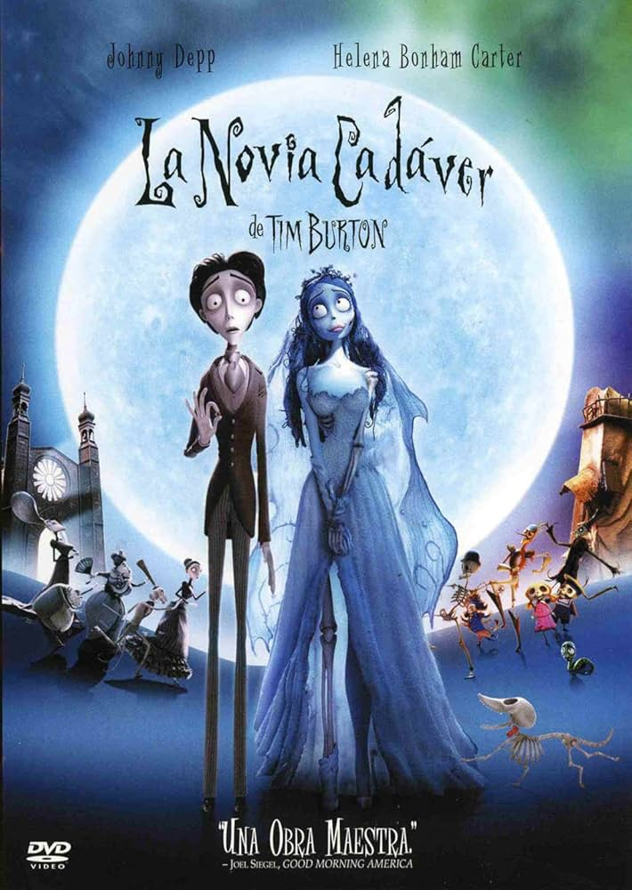
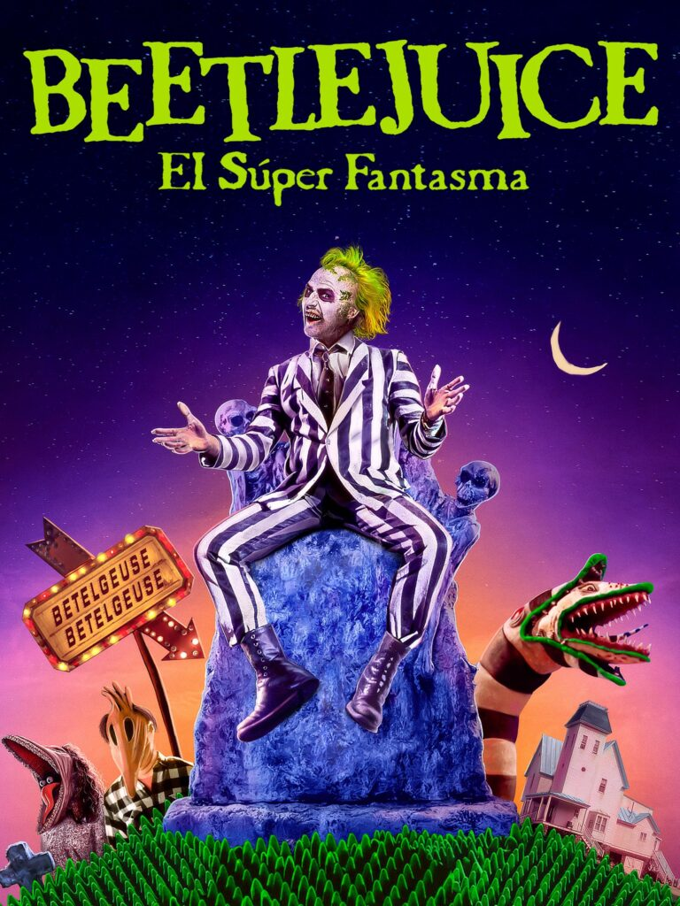
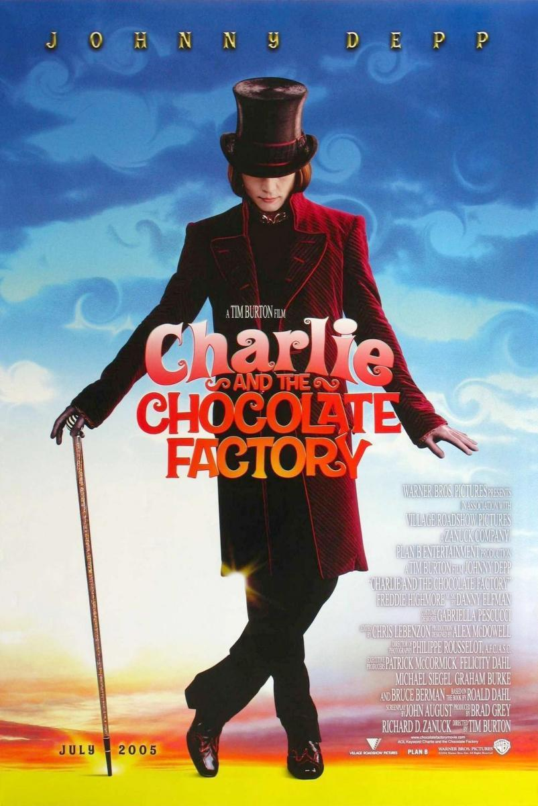

Tim Burton
Big Fish

Año: 2003
Duración: 2h 5min
Puntuación: 7,9 / 10
Sinopsis: Un hijo frustrado intenta distinguir la verdad de la ficción en la vida de su padre moribundo.
Estrellas: Ewan McGregor, Albert Finney, Billy Crudup
Anécdota: Para la famosa escena, se plantaron 10,000 narcisos reales en un fin de semana para lograr la autenticidad que buscaba Burton.
Premios: Nominada a 1 premio Óscar, 69 nominaciones en total.
La novia cadáver

Título original: Corpse Bride
Año: 2005
Duración: 1h 17min
Puntuación: 7,4 / 10
Sinopsis: Cuando un tímido novio practica sus votos matrimoniales ante la presencia inadvertida de una joven fallecida, esta se levanta de la tumba asumiendo que la ha tomado por esposa.
Estrellas: Johnny Depp, Helena Bonham Carter, Emily Watson
Anécdota: Las marionetas medían entre 25 y 28 centímetros (9,8 a 11 pulgadas) de altura, y algunos de los escenarios eran tan grandes que los animadores podían pasar por las puertas del plató con un mínimo de agachamientos.
Premios: Nominada a 1 premio Óscar, 9 premios y 30 nominaciones en total.
Bitelchús

Título original: Beetlejuice
Año: 1988
Duración: 1h 32min
Puntuación: 7,4 / 10
Sinopsis: Los espíritus de una pareja fallecida son acosados por una familia insoportable que se ha instalado en su casa, y contratan a un espíritu maligno para que los expulse.
Estrellas: Alec Baldwin, Geena Davis, Michael Keaton
Premios: Ganó 1 premio Óscar, 7 premios y 11 nominaciones en total.
Charlie y la fábrica de chocolate

Título original: Charlie and the Chocolate Factory
Año: 2005
Duración: 1h 55min
Puntuación: 6,7 / 10
Sinopsis: Un niño gana una visita a la fábrica de chocolate más magnífica del mundo, dirigida por el fabricante de dulces más inusual.
Estrellas: Johnny Depp, Freddie Highmore, David Kelly
Anécdota: Se entrenaron ardillas auténticas para pelar nueces en la escena de Veruca Salt, en lugar de usar efectos especiales.
Premios: Nominada a 1 premio Óscar, 15 premios y 52 nominaciones en total.